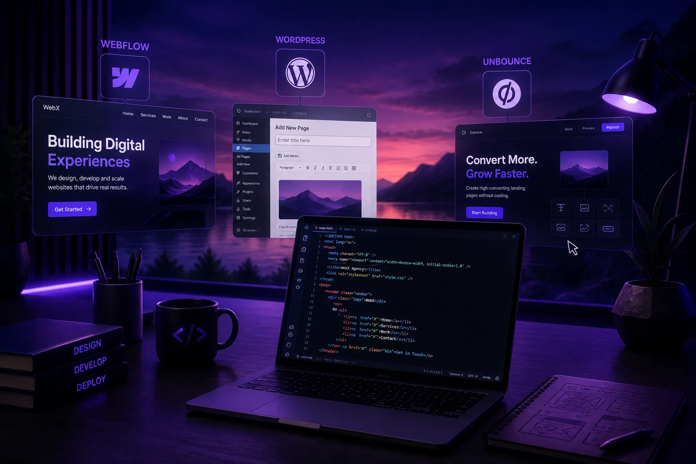
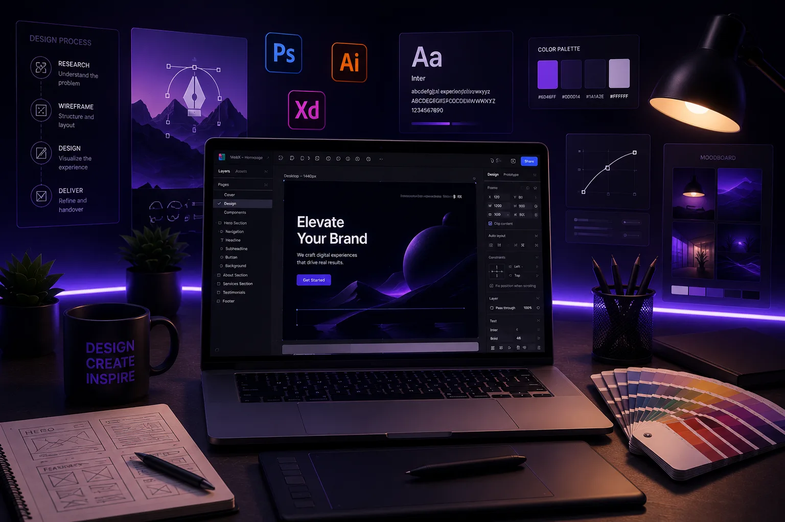
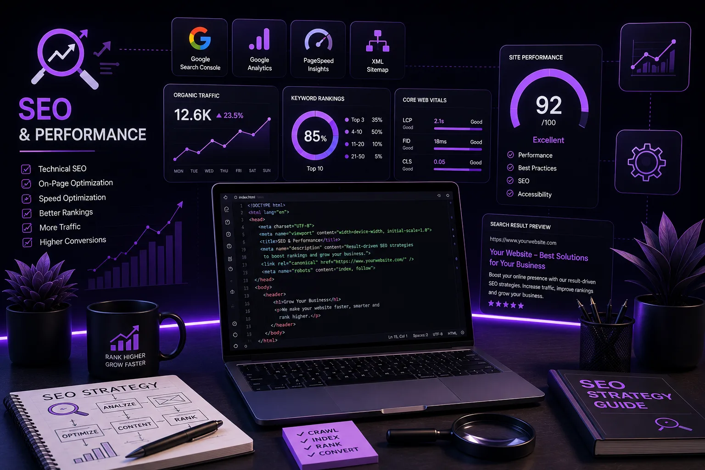
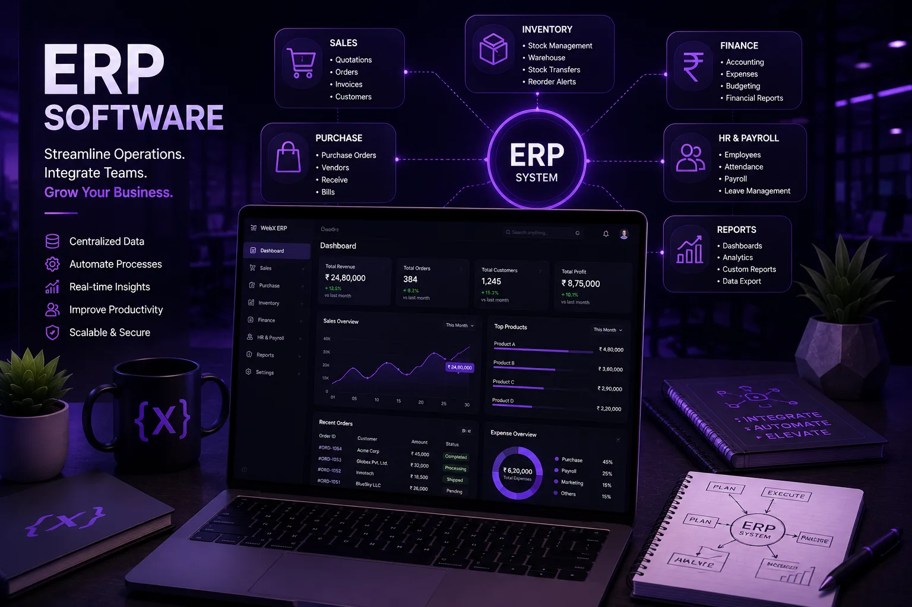

Build better, rank higher.
Practical, no-fluff guides on web design, development, conversion and SEO - written by the team at Web{X} Studio, an international web design & engineering studio. What we learn shipping work for founders across India and worldwide, shared openly.
How Much Does a Website Cost in 2026? A Transparent Global Pricing Guide
Real price ranges for landing pages, business websites, ecommerce and custom builds - what drives the number up, and how to brief smart so you don't overpay.


Landing Page Best Practices: 11 Elements of a High-Converting Page
The 11 elements - message match, headline, forms, speed, social proof, mobile, testing - that decide whether a landing page converts.

How to Increase Landing Page Conversion Rate: A CRO Playbook
What a good conversion rate actually is, the six leaks costing you visitors, and how to fix and test them without fooling yourself.
StrategyLanding Page vs Homepage: What's the Difference and When to Use Each
A homepage serves everyone who might buy from you. A landing page serves one audience, one campaign, one action - here's how to tell them apart.
Web DevelopmentWeb Development Trends in 2026 That Actually Matter for Your Business
Seven web trends translated for founders, not developers - AI, speed, accessibility, privacy and AI-search readiness, and what each means for revenue.

Static vs Dynamic Websites: Which Is Right for Your Business?
The words sound technical, but the choice decides your site's speed, cost, security and how easily you can grow it later.
StrategyLanding Page vs Website: Which Does Your Business Actually Need?
One converts a single campaign; the other carries your whole brand. Here's how to choose - and why picking wrong quietly costs you leads.
SEO & PerformanceCore Web Vitals in 2026: How Site Speed Decides Your Google Ranking
LCP, INP and CLS in plain English - what Google actually measures, why a slow site loses customers, and the fixes that move the needle.

How to Choose a Web Design Agency: A Founder's Guide to Hiring Globally
Working with a studio in another country is now the norm. The questions to ask, the red flags to dodge, and how to run a remote build that ships on time.

Web Design Company in Ludhiana: Costs & How to Choose (2026)
What a good web design company in Ludhiana costs, what it should deliver, and how to pick one that ranks and converts - for manufacturers, exporters and local brands.

How Much Does a Website Cost in Punjab? A 2026 Price Guide
Real INR price ranges across Ludhiana, Amritsar, Jalandhar and Mohali - the five cost tiers, what drives the number, and how to avoid overpaying.

Website Development in Amritsar, Jalandhar & Mohali (2026)
Every Punjab city needs a different kind of website. A practical, city-by-city guide to what businesses need - from exports to hospitality to SaaS.
Punjab · HiringHow to Find the Best Web Design Company in Punjab (2026)
Every studio claims the crown. The criteria that actually predict a great website, the red flags to avoid, and the exact questions to ask before you sign.
Punjab · StrategyWhy Every Punjab Business Needs a Fast, SEO-Ready Website in 2026
Punjab's businesses are losing customers to a slow or missing website. Why an SEO-ready site is non-negotiable now - and what yours should actually do.
Web DevelopmentWhat Is Website Development? A Complete 2026 Guide
Front-end, back-end, full-stack, the process, tools and costs - a clear, jargon-free explanation of how websites actually get built.
Web DevelopmentThe Website Development Process: 7 Steps From Idea to Launch
The seven stages that take a project from a rough idea to a fast, ranking, launched website - and what goes wrong when studios skip one.
Web DevelopmentTypes of Website Development: Front-End, Back-End & Full-Stack
Static, dynamic, CMS, ecommerce and web apps - name exactly what your project needs and hire the right skills for it.
Web DevelopmentWebsite Development Services: What's Included & How to Choose
What a complete web development service covers, the common engagement models, and how to choose a company you won't regret.
Web DevelopmentCustom Website Development vs Website Builders (2026)
Hand-code or build on Webflow, Wix or WordPress? Cost, speed, control, SEO and scale compared - with a clear pick by use case.
How Long Does Website Development Take? A Realistic Timeline
Realistic 2026 timelines for landing pages, business sites, ecommerce and web apps - and the honest truth about what speeds or slows a build.